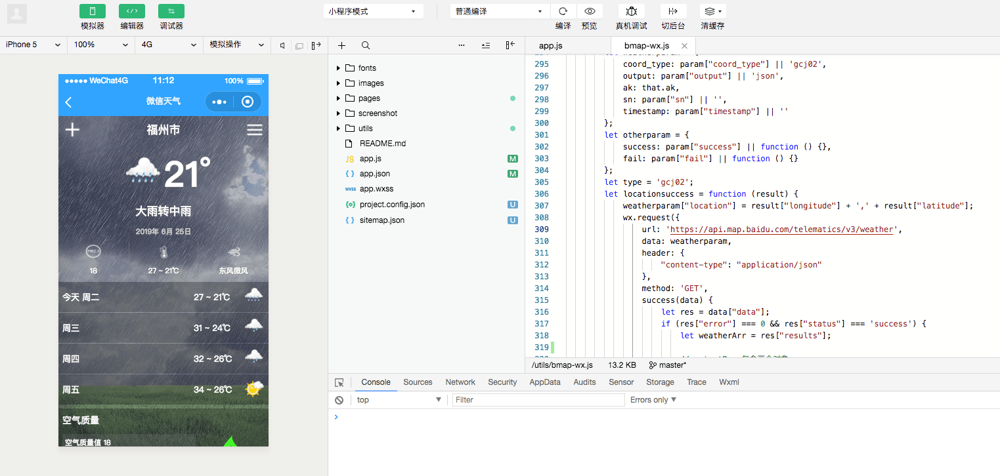
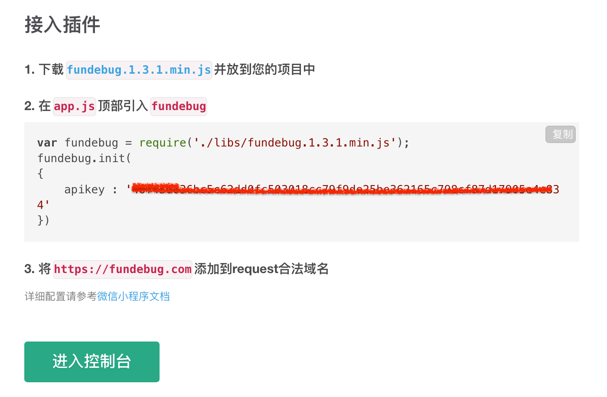
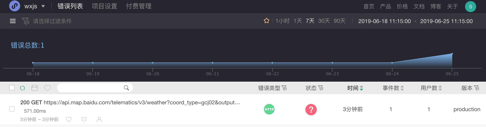
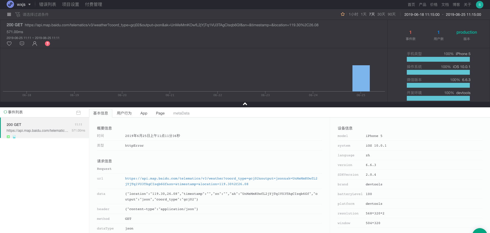
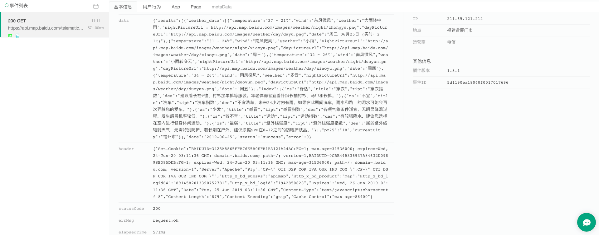
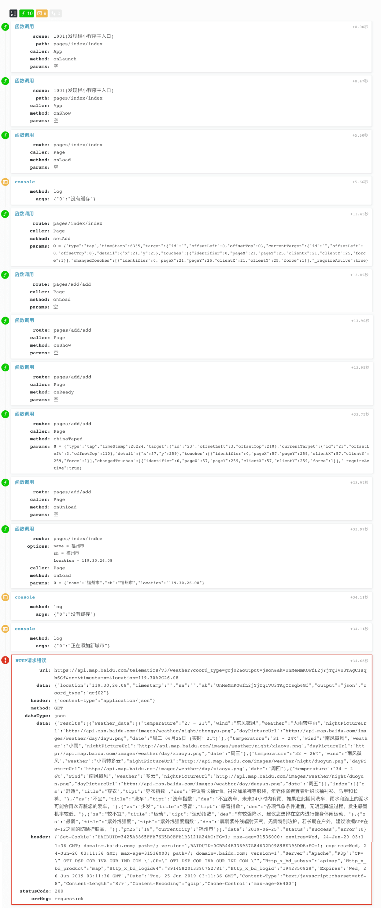

原文连接:https://www.cnblogs.com/fundebug/p/monitor-httptimeout-in-weather-miniapp.html
摘要： 请求时间太长，影响用户体验，使用 Fundebug 监控慢请求。
Fundebug 的微信小程序监控插件在 0.5.0 版本已经支持监控 HTTP 请求错误，在小程序中通过wx.request发起 HTTP 请求，如果请求失败，会被捕获并上报。时隔一年，微信小程序插件已经更新到 1.3.1, 而且提供了一个非常有用的功能，支持监控 HTTP 慢请求。对于轻量级的性能分析，可以说已经够用。
本文我们以一个天气微信小程序为例(由bodekjan开发)，来演示如何监控慢请求。bmap-wx.js中的weather()函数调用百度地图小程序 api 提供的接口来获取天气预报信息。

接入监控
由于使用百度的 api，我们无法确认该接口的稳定性，可能有时候会特别慢，导致天气信息显示不出来。于是，我们使用 Fundebug 来监控请求过慢的情况。接下来，我们来演示如何监控慢请求。注册账户后，记得要在创建项目是选择“微信小程序”这一项目类型。
根据指示完成接入流程：

在app.js顶部加入下面的代码(记得将 apikey 替换成你自己的)：
var fundebug = require("./utils/fundebug.1.3.1.min.js");
fundebug.init({
apikey: "YOUR-API-KEY",
monitorMethodCall: true,
monitorMethodArguments: true,
monitorHttpData: true,
setSystemInfo: true,
setUserInfo: true,
setLocation: true,
httpTimeout: 200
});虽然init()函数只要设置apikey即可使用，但是为了最大程度发挥监控的威力，我们不妨多设置一些监控选项。
微信小程序插件有很多的可配置项，由于涉及到数据，默认处于关闭状态。我们可以监控函数调用(monitorMethodCall)，以及函数调用的参数(monitorMethodArguments)，监控 HTTP 请求的 Body 中的数据(monitorHttpData)，获取系统信息(setSystemInfo)、用户信息(setUserInfo)、地理位置(setLocation)。
监控慢请求
最后，最重要的一步，配置httpTimeout来监控超过特定时长的请求，httpTimeout 类型为 Number，单位为毫秒(ms)。演示起见，我们将时间设置为 200 毫秒。
在微信开发者工具内运行代码，Fundebug 立马收到报错。小程序发往https://api.map.baidu.com/telematics/v3/weather接口的请求时长为 571ms，超过预设时间 200ms。

错误详情
该请求返回代码 200，表明能够正常获取数据。点击该条错误，查看错误详情：

通过上方的统计数据，我们可以知道获取天气信息的接口出现缓慢情况的趋势，影响的用户数量，累计发生的次数。我们可以以此来评估是否需要优化该接口，甚至替换成其它第三方接口来解决这个问题。
附加信息
因为配置了 monitorHttpData，所以我们可以查看到请求 body 中的详细数据。当请求失败的时候，有时候需要结合参数来分析失败的原因。

另外，用户行为数据记录了小程序运行的详细状况，特别是函数的调用序列，对于理解出错前程序的执行逻辑很有帮助：

关于Fundebug
Fundebug专注于JavaScript、微信小程序、微信小游戏、支付宝小程序、React Native、Node.js和Java线上应用实时BUG监控。 自从2016年双十一正式上线，Fundebug累计处理了10亿+错误事件，付费客户有阳光保险、核桃编程、荔枝FM、掌门1对1、微脉、青团社等众多品牌企业。欢迎大家免费试用！

版权声明
转载时请注明作者Fundebug以及本文地址：
https://blog.fundebug.com/2019/06/27/monitor-httptimeout-in-weather-miniapp/